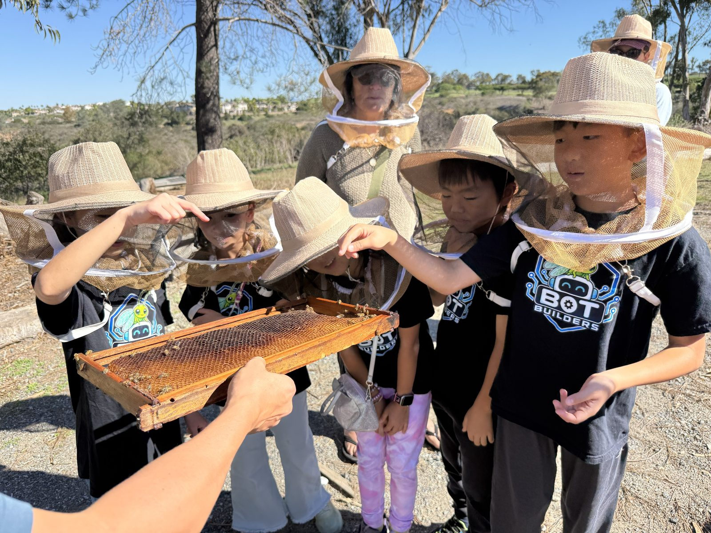
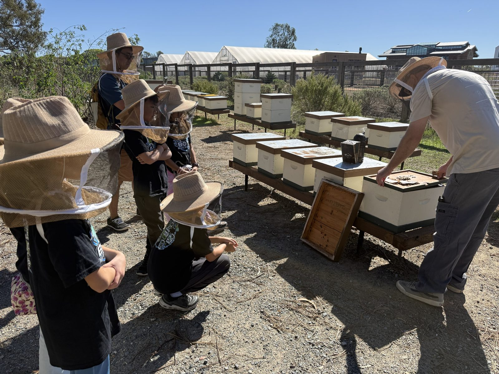
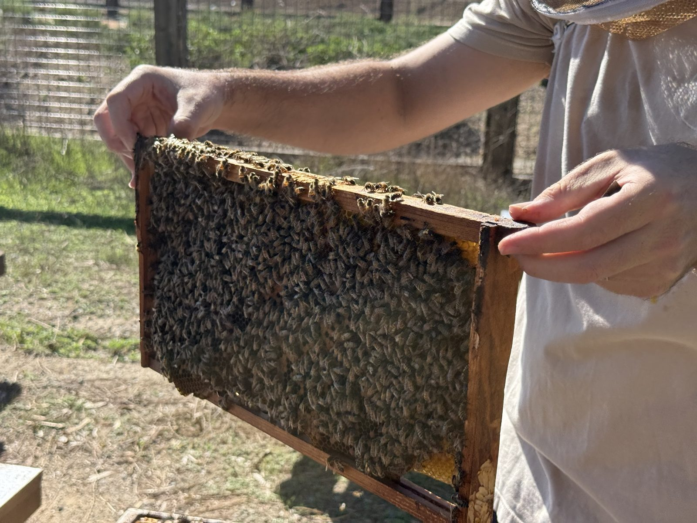

Summary: The team's third farm visit, and the first one that was also a public outreach event. A beekeeper walked the group through a honeybee rescue sanctuary's hive at Fox Point Farms, Encinitas — what each bee does at each age, how a queen is made, how honey is harvested and why bees need protecting from ants. Written up from a live transcript.
Sources: raw/source-docs/fox-point-bee-tour-2026-10-25.md (15 parts, pasted live by Kevin during the tour); three photos taken on the tour, 25 Oct 2026 (docs/assets/bee-tour/); team announcement, 24 Oct 2026
Last updated: 2026-10-25
Read this first. The transcript is speech-to-text, pasted in pieces, and every piece starts and ends mid-sentence — so there are gaps, and some words are mangled. Everything below is what the guide said, attributed to him. Where a figure or a claim looks off or is the kind a judge would question, it is listed under Check before the board uses it, not quietly corrected.
| When | Sunday 25 October 2026, 10:30 AM bee tour; arrive 10:15 |
| Where | Fox Point Farms, 1200 Fox Point Farms Lane, Encinitas |
| Who went | Five kids and two adults (5 kids' + 2 adult tickets). See team roster |
| Guide | A beekeeper who runs a honeybee rescue sanctuary. He appears to be a beekeeper who works with the farm rather than farm staff ("this farm is giving") |
| After the tour | The station was set up with the board and bugs: 30-plus visitors stopped at the station, heard about the lacewing from the kids, and took the survey; the kids explained the project well (see outreach event). Then lunch and the Week 13 meeting (see calendar) |

The team looking at a frame of comb. A few bees are still on it. The guide let the kids look closely and touch the wax (source: part 7; photo, 25 Oct 2026).

The apiary: a row of white hive boxes on wooden stands. The guide lifts a lid while the team watches from a few metres back. What looks like the smoker — a dark can with a spout — sits on top of the next hive. He wears a veiled hat and no full suit, matching what he said about small hives (source: parts 9, 11; photo, 25 Oct 2026).

A frame lifted from a hive, covered in worker bees — yellow comb shows at the edges. Every bee in this picture is a female worker (source: part 3; photo, 25 Oct 2026).
(source: fox-point-bee-tour-2026-10-25.md, part 1)
honeybee life cycle — the story of one worker bee, hour by hour: newborn who makes her own bed, nurse bee making royal jelly, guard bee learning the hive's smell, forager, scout. Plus how a queen is made from the same egg as a worker, splits and swarms, festooning, the waggle dance, and the queen's mating flight.
beekeeping and honey — the hive itself: inner cover, pollen patty, wax foundations, queen excluder, one-way door; smoke and why it works; how honey is made, harvested, spun and bottled; heating honey; the cave drawing; and how to keep ants out without poison.
None of these were said by the guide — they are ours, and meant as starting points.
| The guide said | How it connects |
|---|---|
| A worker bee's job changes with her age: nurse → guard → forager → scout | Our lacewing changes job too: the larva hunts aphids, the adult drinks nectar. A different life stage, a different role in the garden — see lacewing project |
| A queen and a worker start as the same egg; diet decides which (royal jelly) | The board's biodiversity story is full of this: the same animal in two roles. Food is what shapes what an insect does |
| Ants have to be kept off the hive; Tanglefoot is "the best non-toxic option", and ants bridged it with a bent weed | A working farm's answer to how do you protect something without poison? — and it is the ants in our own aphid scene (lacewing game v2), the aphids' bodyguards, from the beekeeper's side |
| The pollinator garden is the busiest place on the farm | A pollinator garden is also a habitat garden: the same flowers feed adult lacewings. See biodiversity at the farm and keystone species |
| A swarm's scouts judge a new home and report by dance; others check before the swarm moves | A real example of a group making a decision from evidence — worth a line for the Innovation Project's Impact story and for core values |
| Fox Point carries Coastal Roots produce (the 20 Sep guide) | We are now at the other end of the same food chain: the tour guide's farm is a customer of the farm we studied. Ties back to the board's opening question, where does our food come from? |
Per the wiki's citation rule, these are the guide's statements that are unsourced, simplified or inconsistent. None is certain to be wrong — they are the ones a judge could ask about.